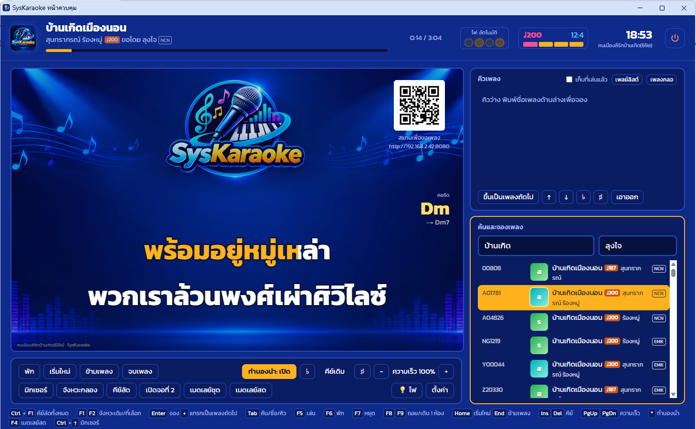
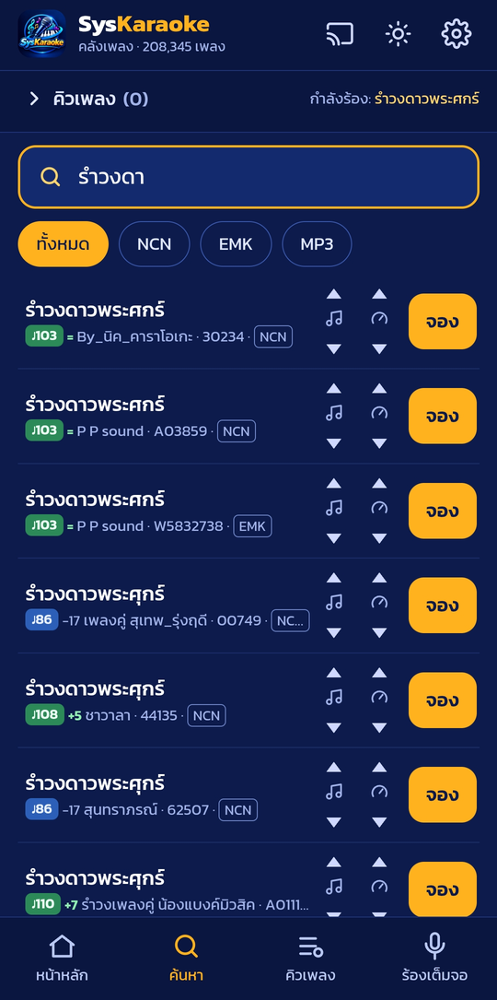
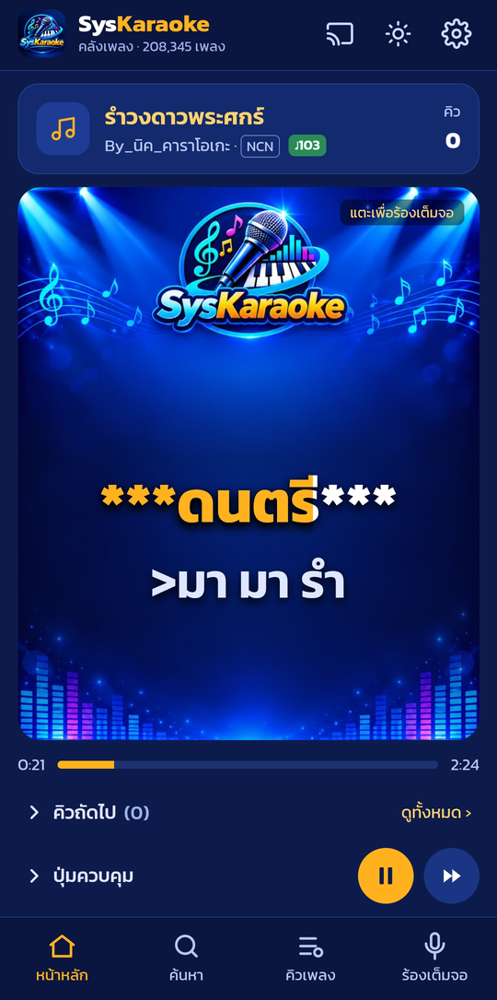
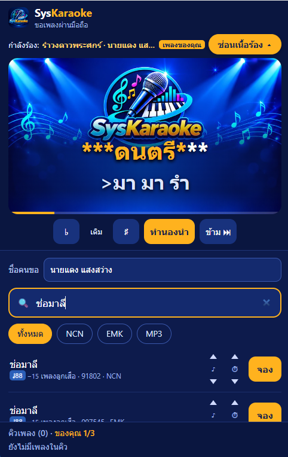
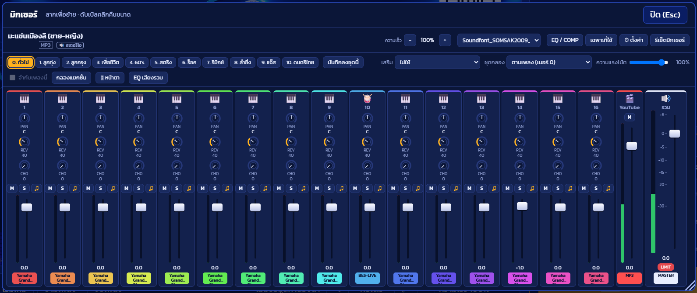
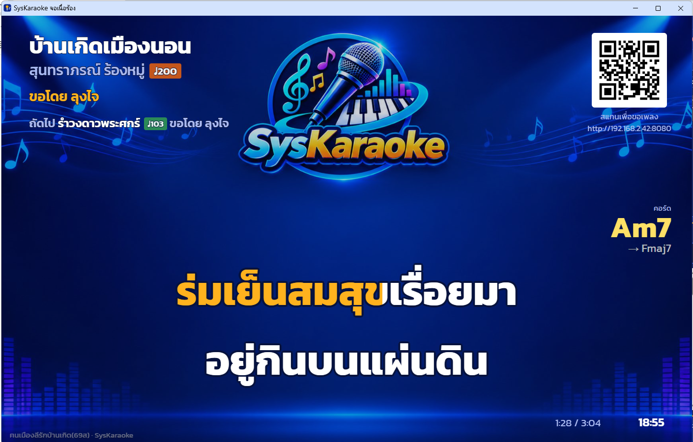

โปรแกรมคาราโอเกะ MIDI ฟรี
สำหรับ PC และมือถือ Android
เล่นเพลง NCN / EMK เนื้อร้องขึ้นจอทีวี เพื่อนสแกน QR ขอเพลงจากมือถือตัวเองได้ ปรับคีย์ ความเร็ว และเสียงดนตรีด้วย SoundFont ของคุณเอง
Windows 10 / 11 (64 บิต) · Android 7 ขึ้นไป · มือถือ กล่องทีวี และ Android TV

ความสามารถ
ใช้โฟลเดอร์เพลงชุดเดียวกันได้ทั้งคอมและมือถือ
เนื้อร้องขึ้นจอทีวี
จอที่ 2 หรือแคสจากมือถือ แสดงเฉพาะเนื้อร้องและคิวเพลง ตัวหนังสือใหญ่ อ่านง่าย
เพื่อนขอเพลงผ่าน QR
สแกนแล้วจองได้เลย ไม่ต้องลงแอป ดูเนื้อร้องเพลงตัวเองบนมือถือ ปิดทำนองนำได้
มิกเซอร์แยกเครื่องดนตรี
ปรับเสียงทีละเครื่อง EQ Reverb Chorus และชุดกลองตามแนวเพลง
ใช้ SoundFont ของตัวเอง
รองรับไฟล์ .sf2 ขนาดใหญ่ เสียงดนตรีดีขึ้นทันทีทั้งบน PC และมือถือ
ปรับคีย์และความเร็ว
ตั้งได้ตั้งแต่ตอนเลือกเพลง มีป้ายบอกความเร็ว (BPM) เทียบกับเพลงที่กำลังเล่น
ค้นหาเพลงไว
ค้นจากรหัส ชื่อเพลง หรือศิลปิน อ่านรายชื่อจาก SONG.DBF ได้ทันที เพลงนับแสนก็ไม่ช้า
ไฟปาร์ตี้ DMX
รุ่น PC ควบคุมไฟพาร์ LED ให้เต้นตามจังหวะเพลง
แจ้งเตือนรุ่นใหม่
โปรแกรมตรวจรุ่นใหม่ให้เอง ไม่พลาดการอัปเดต





ดาวน์โหลดฟรี
ไฟล์ทั้งหมดอยู่ในหน้า Releases ของ GitHub
| ใช้กับ | ไฟล์ |
|---|---|
| Windows 10 / 11 (64 บิต) | SysKaraoke_Free_Setup_….exe |
| มือถือ / กล่องทีวี / Android TV (Android 7+) | SysKaraokeMobile-….apk |
| คู่มือเริ่มใช้งานแอปมือถือ | SysKaraoke.pdf |
วิธีติดตั้ง
💻 Windows
- ดับเบิลคลิกไฟล์ Setup แล้วกด Next ใช้โฟลเดอร์ที่โปรแกรมแนะนำ
- Windows เตือน "Windows protected your PC" ให้กด More info → Run anyway
- วางไฟล์
.sf2ในโฟลเดอร์ SoundFonts แล้วเลือกคลังเพลงในโปรแกรม
📱 Android
- โหลดไฟล์
.apkแตะเพื่อติดตั้ง อนุญาต "ติดตั้งแอปที่ไม่รู้จัก" - Play Protect เตือน ให้กด ติดตั้งต่อ
- เปิดแอป เลือกโฟลเดอร์ที่มี
SongsและDataอยู่ข้างใน
กล่องทีวี: คัดลอก APK ลงแฟลชไดรฟ์ หรือใช้แอป Downloader
คำถามที่พบบ่อย
เสียค่าใช้จ่ายไหม
ไม่เสีย แจกฟรีทั้ง PC และ Android ใช้ได้ทั้งที่บ้าน ร้านอาหาร และงานเลี้ยง
มีเพลงมาให้ไหม
ไม่มี ใช้ไฟล์เพลง NCN / EMK และ MP3 ที่คุณมีสิทธิ์ใช้งานอยู่แล้ว
ทีวี Samsung / LG ลงได้ไหม
ลงตรงไม่ได้ เพราะไม่ใช่ Android ให้แคสหน้าจอจากมือถือขึ้นทีวีแทน
เพื่อนเปิดหน้าขอเพลงไม่ได้
ต้องต่อ Wi-Fi วงเดียวกัน ถ้า Wi-Fi แขกบล็อกไว้ ให้เปิดฮอตสปอตจากเครื่องหลักแทน
โปรแกรมแจกฟรีอื่นๆ
จากผู้พัฒนาคนเดียวกัน
SoundSchedule
ออดโรงเรียน เสียงตามสาย ตั้งเวลาเล่นเสียงอัตโนมัติ
แอปจดมิเตอร์น้ำประปาหมู่บ้าน
สำหรับคนเดินจดมิเตอร์น้ำประปาหมู่บ้าน
English: SysKaraoke is a free MIDI karaoke player for NCN / EMK songs on Windows and Android. Lyrics on TV, song requests by QR code, per-instrument mixer, custom SoundFonts, key and tempo control. Download free.